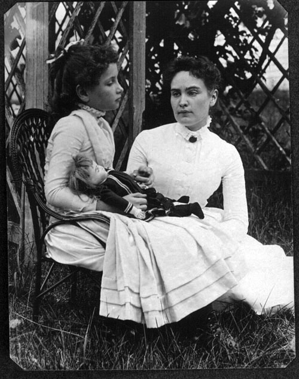

Biography
Helen Adams Keller was a strong woman who never gave up despite her difficulties in life. Ever since she was about nineteen months old she became deaf and blind because of either scarlet fever or another unknown illness. As Helen grew older, one day she had a teacher travel to Tuscumbia to help Keller. The special teacher that changed her life was named Anne Mansfield Sullivan. Although Anne was her teacher, she also suffered from serious vision problems. Helen is described as a bratty child, although she was very bright as many would say.
There were many tactics that Sullivan used to help teach Keller. One day, Sullivan took Helen outside to a water spout and she put her hand under the water. As the water was pouring, Sullivan spelled out w-a-t-e-r into her hand. Then, Keller realized that water was a flowing and cooling sensation that she now was able to understand.
At a very young age, Helen was inspired to go to college. The achievement of Keller's was as much as an achievement for Sullivan. While she was a student at Radcliff, she was writing a book. In 1903 her Biography, The Story of My Life. Helen Keller today is still influential for women by encouraging others to do what is best for them and for working hard for what they want.
"Walking with a friend in the dark is better than walking alone in the light" (Helen Keller).